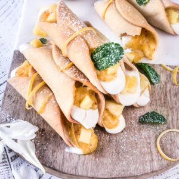
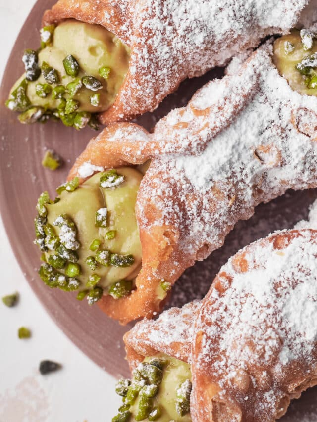

Chiar dacă este situat în inima Bucureștiului, vecin cu centul vechi, restaurantul Goblin's House beneficiază de o locație intimă, cu un interior foarte elegant și primitor. Designul restaurantului îmbrățișează stilul clasic cu influențe italienești din zonele de proveniență ale bucătăriei, oferind clienților săi experiențe culinare unice, de neuitat..
Beneficii:
Ingrediente proaspete
Produse crescute natural, netratate chimic, cu îngrășaminte sau pesticide, într-adevăr sănătoase.
Meniu restaurant QR
Meniul din restaurant este disponibil și în format digital QR. #staySafe
Servire #safe
Servirea la masă se efectuează în condiții de siguranță #covid19. Purtăm masca și mănuși.
Livrare la domiciliu
Pentru siguranța purtăm masca și mănuși. Timpul de livrare va fi între 40 și 80 minute.
Noutăți:
Cannoli cu ananas

Chef:Radu Gheorghe
Categoria: Desert
Anul creației: 2023
Descriere:Cannoli. Produsul de patiserie siciliană este în mod tradițional prăjit și umplut cu ricotta. Vă arătăm o variantă pur vegetală de la cuptor cu umplutură răcoritoare de lămâie curdă și dulceață de ananas. Atat de bun!
Cannoli Goblin:

Chef:Radu Gheorghe
Categoria: Desert
Anul creației: 2023
Descriere:Cannoli. Produsul de patiserie siciliană este în mod tradițional prăjit și umplut cu ricotta. Vă arătăm o variantă pur vegetală de la cuptor cu umplutură răcoritoare de ricotta, amestecată cu pudră de matcha. Atat de bun!